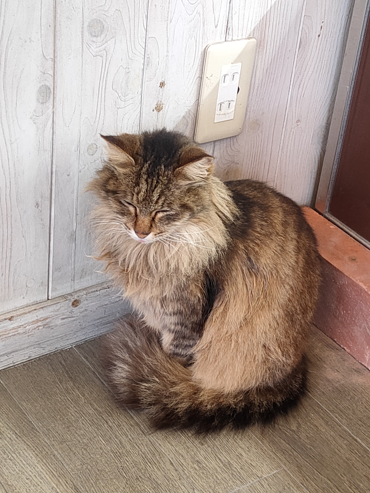
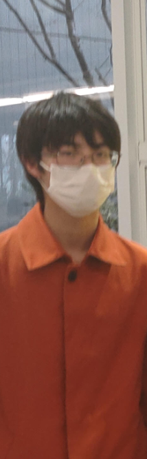

初めまして、石引響と申します。
私は今年で大学2年生となりました。毎日課題と講義で忙しい日々を送っていますが、充実した生活を送っていると感じております。
私が最近興味を持っていることは化学です。「Dr.STONE」というアニメを視聴し、端的に噛み砕いて理屈が説明されていましたので、簡単にですが理解することができました。
そして私は猫が大好きです。猫は全てを幸せにしてくれます!
この授業を通してGoogleマップの仕組みを理解したいです。 自由度が高く、拡大も縮小も自由自在、更には目的の場所に飛んで自分で見ながら探索できるので、どのようなプログラムがされているのか非常に興味があります。